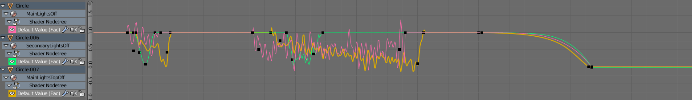
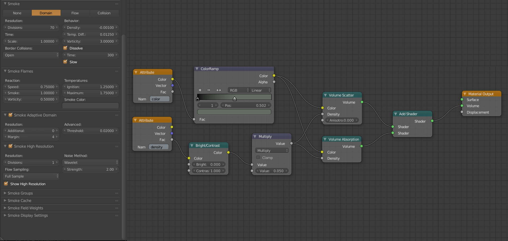
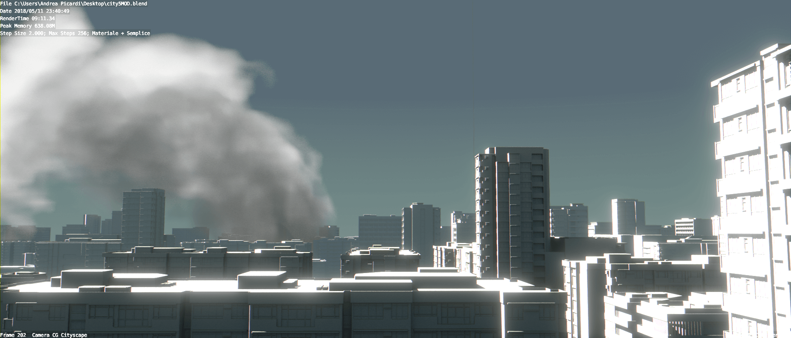
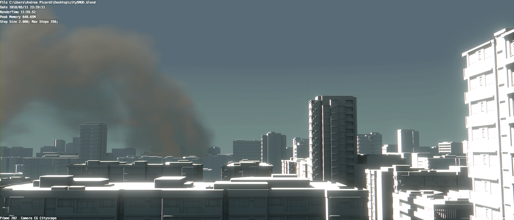
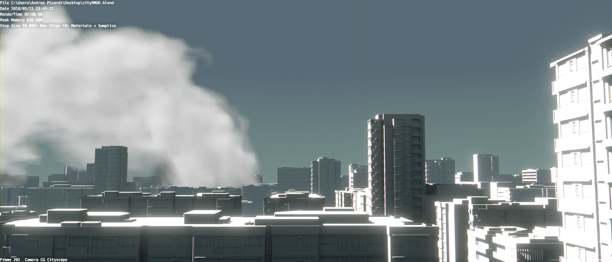
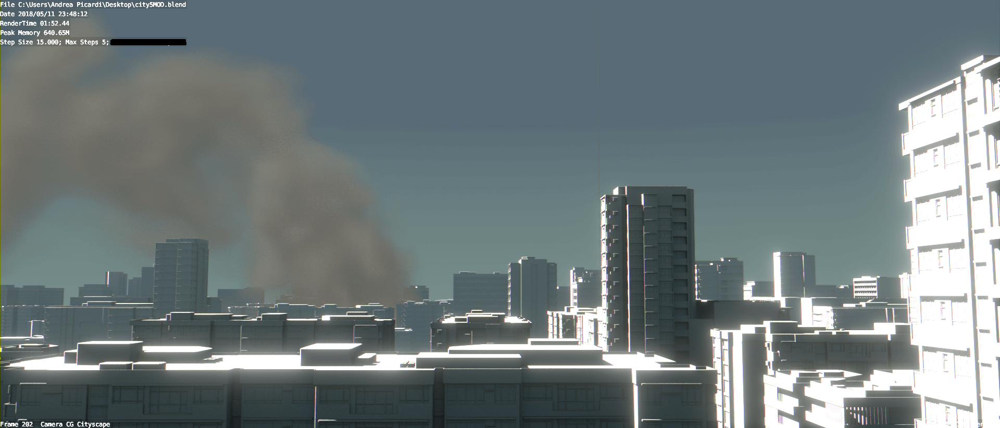
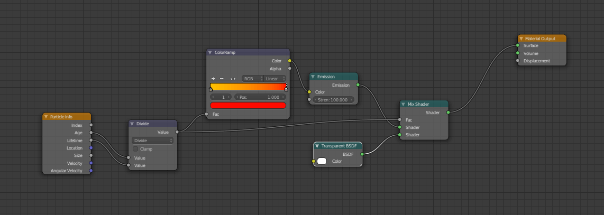

RAGAZZO
Multiple soluzioni sono state esplorate per quanto riguarda il rig del ragazzo.
Una prima versione, che prevedeva un rig più complesso per le dita (basato su questo tutorial) è stata scartata per via di problemi nel reset dei root delle dita causati dal constraint childOf.
Una seconda versione ottenuta con l’add-on Rigify prevedeva anch’essa un rig completo delle mani, tuttavia sono sorti problemi da una parte di weight paint, che hanno portato a un rifacimento parziale del modello, unendo in una sola mesh giacca, ragazzo, visore e cuffie; dall’altro il modello della mano non si presentava adatto ad essere riggato per via dell’eccessiva semplicità dello stile e della lunghezza del palmo rispetto alle dita.
La versione finale è quindi stata ottenuta sempre con rigify, ma non presenta ossa per il controllo facciale, delle orecchie o delle mani, compito che è stato delegato invece a shape keys, e presenta invece sia ossa IK (rosse) che FK (verdi) per gli arti con possibilità di passare da una modalità all’altra a seconda delle necessità. Sono inoltre presenti ossa dedicate ad aggiustamenti (blu). In giallo le ossa dedicate all’asse longitudinale.

L’animazione del ragazzo, del suo zaino e della cinghia è stata realizzata sia attraverso keyframe che shape keys.
I movimenti del ragazzo seguono la regola dell’ ”everything is a bouncing ball”. Infatti nella maggior parte delle animazioni la mesh del ragazzo viene distorta per accentuare il movimento e migliorare il senso di dinamicità.
Le orecchie meccaniche sono state ideate per creare movimento secondario nel personaggio e rendere le animazioni più accattivanti.
Allo stesso modo la tracolla segue i movimenti del personaggio con leggero ritardo. Questo ha reso necessario, nella maggior parte dei casi, settare manualmente i keyframe per la rotazione e la posizione invece che utilizzare il constraint copyPosition in riferimento ad un osso della spalla del rig del ragazzo (soluzione che è comunque stata utilizzata in determinati contesti, specialmente quando la tracolla non era visibile dal punto di vista della camera.)
Anche il led di stato presente sul casco del ragazzo è stato animato modificando il valore di intensità dell’emitter ciclicamente.
Il salto del ragazzo dall’edificio è stato basato su video di Freerunning e Parkour
La fase dell’arrampicata è stata in un primo tempo ripresa da video di free climbing
Ma in un secondo momento, considerando la natura magnetica dei guanti da scalata, si è optato per riprendere le movenze del seguente apparato: e del seguente apparato:
Il movimento delle gambe è leggermente ritardato rispetto a quello delle braccia per evitare l’effetto meccanico del video precedente.
Le altre animazioni, le quali richiedevano meno atleticità sono state studiate allo specchio.
ROBOT
Il rig del robot è alquanto semplice, essendo che il modello compie movimenti “meccanici” e quindi non necessita di un weight paint particolare.
L’armatura si può dividere in tre sezioni principali (gambe, corpo e arma), tutte imparentate ad un bone di “root” usato per spostarlo nelle scene.
La primissima sezione dell’armatura sono le gambe, ognuna composta da cinque bone collegate sequenzialmente l’una all’altra. Un bone “IK target” vicino all’ultimo bone della gamba permette tramite cinematica inversa di controllare tutte e cinque le bone dell’arto. Inoltre sono presenti due bone “target” che permettono di controllarne l’orientamento (anche se ne è stato usato solo uno).
La sezione del corpo, invece, presenta solo due bone: uno per controllare tutto il corpo del robot (al quale sono imparentate “a distanza” l’osso iniziale delle quattro gambe) e uno con funzione “Damped Track” che permette di rivolgere il “muso” del robot nella sua direzione.
Infine il terzo sottoinsieme dell’armatura è quello dell’arma composto da quattro bone: uno che controlla tutta l’arma, due (imparentati come figli al primo) che controllano la rotazione dei due rotori dell’arma e uno con funzione “Damped Track” che serve per facilitare il puntamento dell’arma.
Il malfunzionamento del robot è stato comunicato anche tramite l’indebolimento dei fari frontali. Per realizzare ciò è stato utilizzato un noise modifier che ha generato valori casuali per l’intensità dell’emitter, tutto questo all’interno di due range di tempo definiti.
Le curve dei tre parametri hanno un lieve sfasamento tra di loro per migliorare la credibilità del lampeggiamento.
WALKING CYCLE ROBOT
Una delle animazioni che vengono inquadrate di più del robot è la camminata in avanti, per questo abbiamo deciso di comporre un walk-cylce e di usare quello per tutte le scene che lo richiedessero.
Essendo il robot quadrupede, ci siamo concentrati nei primissimi tempi di animazione nella ricerca di reference per la sua camminata.
Originariamente la nostra ricerca si è rivolta ai Dragoons, un'unità militare del gioco StarCraft.
Questa reference però è stata scartata quasi subito per via del diverso orientamento delle giunture delle gambe rispetto a quello del nostro robot. Ci siamo così concentrati sul camminatore AT-AT della saga di Star Wars.
Questo ha portato alla seguente animazione:
la quale, anche se soddisfacente, poteva essere migliorata.
Abbiamo così iniziato a basare la nostra camminata su quella dei ragni (una delle prime ispirazioni nella fase di concettualizzazione del robot).
In particolare ci siamo concentrati solo sulle paia centrali, escludendo quelle frontali e posteriori:
Questo approccio ci ha portati al seguente risultato, il quale ci sembrava già più soddisfacente:
Tuttavia mancava ancora qualche cosa: il robot non ci sembrava abbastanza “meccanico”, o “pesante”.
Abbiamo così optato per abbassare il corpo del robot durante la camminata, per dare la parvenza di migliore stabilità, e aggiunto una leggera flessione alle gambe quando impattano il terreno, come se stesse attutendo il colpo e il suo peso.
DISTRUZIONE DEL SUOLO
Questo effetto è stato realizzato grazie all’utilizzo del dynamic paint. Una volta generato il suolo frammentato attraverso l’add-on “cell fracture”, ogni singolo frammento è stato imparentato ad una mesh triangolare, ognuna di queste facenti parte di un singolo oggetto. Il parenting di massa è stato possibile grazie ad uno script realizzato da un gentile utente del forum blenderartist.net di nome Liero. L’oggetto con i triangoli è diventato il canvas del dynamic paint, mentre il ruolo di brush è stato dato ad un cilindro con una base a tronco di cono. Il cilindro a contatto con i triangoli sottostanti ha attuato un displacement a questi ultimi, che hanno trasferito a loro volta la rototraslazione al frammento di suolo a cui erano imparentate.
CARICAMENTO DELL’ARMA
L’effetto particellare del caricamento dell’arma è stato diviso in due fasi, ognuna con il suo specifico Particle System. Entrambi i tipi di particelle sono generati da un icosaedro posto frontalmente alla canna dell’arma, e la traiettoria è modificata dai diversi force fields presenti al suo interno. La direzione dell’emitter è rivolta verso l’interno dell’icosaedro, dunque con un parametro Normal con valore negativo. Questo per fare in modo che l’effetto particellare sia direzionato verso l’arma e dare quindi l’effetto di “caricamento”.
Particelle verdi - Primo stadio del caricamento dell’arma. Questo effetto particellare ha come base delle particelle icosaedriche il cui movimento è solo lievemente influenzato dai vortex. Si è inoltre deciso di dare una lieve randomizzazione all’emitter così come alla dimensione delle particelle.
Particelle rosse - Secondo stadio del caricamento dell’arma. La forma di queste particelle è cubica, ed è funzionale alla dimensione con cui vengono visualizzate. Infatti essendo di piccole dimensioni non c’è stata necessità di utilizzare geometrie complesse che avrebbero aumentato i tempi di render. Questo effetto particellare è influenzato solamente dai due vortex e dal force field animato, il quale effetto combinato fa ruotare queste particelle in un anello che avanza fino al culmine del wireframe icosaedrico in rotazione.
IL FUMO
Il fumo in lontananza nella prima scena è alquanto semplice, essendo che doveva essere un elemento di sfondo e non rappresentare la parte principale della scena.
Il “sistema” è composto dal dominio, un emitter (un icosaedro a metà) e un wind generator con limitazioni sull’area di influenza, che permette così al fumo di essere spinto dal vento solo quando raggiunge una certa altezza.
Lo shader del fumo è anch'esso semplice per i motivi sopra citati, e in più perché così ci garantiva tempi di render accettabili
    LA POLVERE
Originariamente avevamo provato anche a creare l’effetto polvere che si doveva sollevare quando il robot spaccava il terreno.
Varie prove sono state fatte con il simulatore del fumo emanando sempre dalle facce di metà icosaedro il fumo con una vorticity elevata, inoltre per aumentare la turbolenza del fumo si è aggiunto un turbulence emitter.
Per dare l’effetto di “deposito” della polvere è stato animato il valore temperature del fumo, iniziando con un valore alto per farlo salire per poi abbassarlo per farlo scendere.
lo shader è uguale a quello del fumo, ma con una densità del volume absorption e scatter inferiori e un dissolve del fumo maggiore.
Purtroppo si è dovuto rimuovere questo effetto a causa dei tempi di render che diventavano troppo lunghi quando veniva aggiunto questo effetto. Inoltre non si mischiava bene con lo stile e i toni cell shading del corto.
LE SCINTILLE
L’effetto particellare delle scintille usato per simboleggiare i malfunzionamenti del robot è stato creato con il motore di particelle di blender.
Per dare l’idea di scintille si è optato per un numero basso di particelle con una vita corta e un alto valore di casualità della durata della vita.
Le particelle vengono emesse da un cilindro tagliato a metà (nel caso delle giunture) e un gruppo di piani rivolti in direzione delle grate del robot (nel caso dell’exhaust). La loro velocità iniziale è abbastanza alta, e anche qui abbiamo una casualità di velocità e direzione di emissione piuttosto elevata. Infine anche la rotazione delle particelle è casuale.
Le particelle vengono renderizzate dal motore di render (cycles) come delle icosphere con piccola dimensione casuale, alle quali si è applicato un materiale emission unito a uno transparent. Questo materiale inoltre reagisce a seconda della vita della particella: è più rosso e con una componente di emitter maggiore se la particella è più giovane o più giallo e con una componente di transparent maggiore se invece è più vecchia.
Completa l’effetto il motion blur, che ne permette di “disegnarne” la scia.
LE BANDIERE
Le bandiere del quartier generale mosse dal vento sono composte da un semplice piano a cui è stato applicato un cloth modifier. La bandiera rimane ancorata alla struttura tramite il pinning degli spigoli superiori del piano. Il vento direzionato è comune ad entrambe le bandiere. Per evitare di ottenere lo stesso identico movimento su tutte e due si è deciso di variare lievemente i parametri del cloth modifier, aggiungendo anche un lieve sfasamento all’animazione della bandiera di destra.
Completa l’effetto il motion blur, che ne permette di “disegnarne” la scia.
MOVIMENTI DI CAMERA
I movimenti di camera sono per la maggior parte piuttosto semplici, si va dai dolly-in per enfatizzare l’attenzione su qualche particolare della scena, a dei camera follow per seguire i movimenti del ragazzo.
I camera shake ottenuti con un noise modifier hanno contribuito a donare senso di massività ad ogni passo del robot.